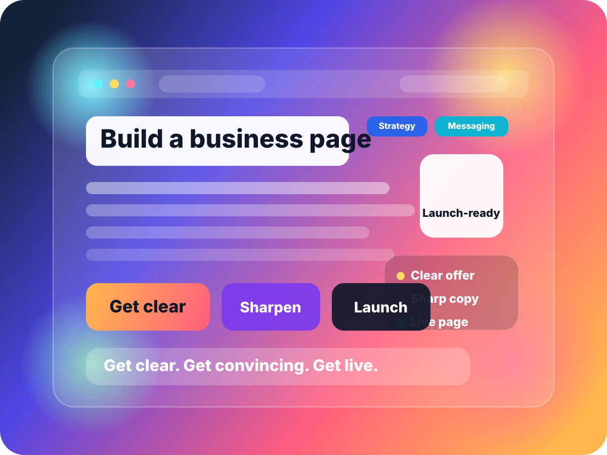

Offer clarity
Define what you are really selling, what outcome matters most, who it is for, and why this version should feel more compelling than the alternatives.
⚡ STOP SPINNING
Still blurry?
Look real. Sound convincing. Launch faster. 🚀
If the idea matters, it should not stay trapped in notes, half-written pages, or vague explanations that make people tilt their head and say, “Wait… what exactly is this?”
MM Now helps founders turn fuzzy business ideas into a clear offer, a stronger message, and a page that feels credible enough to put in front of real people — without getting stuck in endless strategy loops.

THE REAL PROBLEM
That is the real friction. Not lack of ambition. Not lack of talent. Not even lack of effort. The real drag comes from trying to build, write, sell, price, and launch something that still feels unstable every time you explain it.
You know the feeling. The idea sounds powerful when you are alone with it. Then the second you try to describe it on a page, in a message, or out loud to another person, it starts slipping. The promise gets longer. The explanation gets softer. The mechanism gets muddier. The offer sounds more complicated than it should. The confidence drops. And suddenly what felt exciting starts feeling fragile.
That is where a huge amount of momentum quietly dies.
Because when the offer is not sharp yet, everything else feels heavier than it should.
The page gets harder to write.
The pricing gets harder to defend.
The CTA gets harder to ask for.
Launching feels premature.
Selling feels uncomfortable.
And then you start doing what smart, capable founders often do when things feel unstable: you compensate with more thinking.
More tabs.
More notes.
More frameworks.
More “one more pass.”
More half-built pages that never quite feel ready.
More clever ideas with no clear sequence behind them.
The work starts expanding while the business itself stays blurry.
That is not because you are lazy. It is because vague businesses are hard to move.
And that is exactly why MM Now exists.
MM Now is built for the founder who knows there is something here, but is tired of losing force every time the business has to be packaged, positioned, explained, or launched. It helps you tighten the offer, sharpen the hierarchy of the message, build the page around what actually matters, and move from “this could be something” into “this is real enough to sell.”
WHAT THIS FIXES
Define what you are really selling, what outcome matters most, who it is for, and why this version should feel more compelling than the alternatives.
Turn scattered thoughts into a sales argument with a cleaner promise, clearer mechanism, stronger section flow, and less explanatory drag.
Move from private concept mode into a live page, real CTA, and visible offer presence that can start collecting real market feedback.
WHY THIS WORKS
Most people try to fix sales pages from the outside. Better design. Better wording. Better button copy. Better formatting. Sometimes that helps. But when the core offer is still fuzzy, page improvements only do so much.
MM Now takes the opposite route.
It tightens the inside first.
The offer gets clearer.
The positioning gets cleaner.
The message gets more specific.
The hierarchy gets easier to follow.
Then the page starts cooperating.
That matters because most sales-page problems are not actually design problems. They are message problems pretending to be design problems. The headline is long because the promise is unresolved. The copy feels generic because the differentiator is underdeveloped. The CTA feels weak because the offer still lacks enough shape to ask for the next step confidently.
Fix the structure and the page stops fighting back.
That sequence is what makes MM Now useful. It is not random output. It is a practical decision path. It turns the page into a strategic artifact that makes the rest of the business easier to move.
WHAT YOU GET
Not just nicer design. Not just words on a screen. A page that makes the offer easier to understand, easier to trust, and easier to act on.
When the offer gets clearer, every downstream decision gets lighter.
Better positioning creates better pages, better pages create better reactions.
It can react to a live page. It cannot react to a private maybe.
WHO THIS IS FOR
If you can feel the business has potential but the current version still sounds too loose, too broad, too technical, too awkward, or too underframed, you are exactly who this page is speaking to.
This is for the person who already cares. The person who is not waiting to be convinced that building something matters. The person who does not need a pep talk so much as a cleaner path.
It is for builders, consultants, creators, operators, service founders, product founders, and opportunity hunters who have real raw material — but not yet the sharpest framing.
It is for people who keep revisiting the same idea because they know it is close, but cannot yet make it land with enough force.
It is for the person who has saved too many notes, opened too many tabs, made too many “final final” versions of the same page, and still knows the business is not being presented as clearly as it should be.
It is not for someone looking for fantasy outcomes without decisions.
It is not for someone who wants vague hype instead of useful structure.
It is for someone who wants the business to feel tighter, cleaner, more believable, and more ready to move.
WHY COPY MATTERS
Founders often treat copy like decoration. A final layer. Something that happens once the “real work” is done. That is backwards.
Copy is where unresolved strategy becomes visible.
The headline exposes whether the promise is weak.
The subheadline exposes whether the mechanism is muddy.
The body exposes whether the audience is actually understood.
The CTA exposes whether the offer is concrete enough to act on.
So when someone says, “I just need help with the page,” what they often mean is, “I need the business to become coherent enough that the page stops feeling like a lie.”
That is why MM Now is not just about generating copy. It is about making the offer easier to package and sell through the act of writing it.
PROOF OF EXECUTION
The GitHub repo is live. The Vercel project is connected. The deployment is public. The page has been revised, pushed, and updated repeatedly. That matters because this is not just strategy theater — the system already goes all the way to a real URL.
📊 PROOF SNAPSHOT
Better offer clarity creates better messaging. Better messaging creates better pages. Better pages create better reactions. That loop is how traction starts.
Real commits and real updates are flowing.
The page is accessible publicly and updates correctly.
Multiple pushes have already changed production.
A BETTER WAY TO LAUNCH
Launch readiness is not the same thing as perfect completion. Most meaningful progress starts when a version becomes clear enough, convincing enough, and functional enough to face the market.
That is where this approach wins.
It does not ask you to wait until every possible uncertainty disappears.
It asks you to make the next version coherent enough to move.
That means less overbuilding.
Less private tinkering.
Less fake perfectionism.
More contact with reality.
More useful market signal.
More practical momentum.
That is what real business building looks like.
⚡ BEFORE
You keep rethinking the business because the message still feels unstable every time it has to become public.
🚀 AFTER
You know what the promise is, what the page should say, and what people need to see next.
IF YOU KEEP WAITING
This matters because “not deciding yet” often feels safe. It feels reversible. It feels like you are preserving options. But in practice, vague offers create their own kind of cost — and it adds up faster than most founders notice.
A vague offer slows everything down.
It slows down pages because every section has to over-explain.
It slows down sales because buyers have to work too hard to understand why this matters.
It slows down content because you keep changing the angle every time you sit down to publish.
It slows down confidence because the business never sounds stable enough to trust all the way through.
And maybe the most expensive part is this: vague businesses create vague feedback.
If the market does not get a clear version, the response it gives back is weak, mixed, and hard to interpret. You cannot tell whether the problem is the offer, the message, the audience, the timing, or just the fact that nobody could fully understand what you were trying to say in the first place.
That is why specificity is leverage.
The clearer the page becomes, the cleaner the feedback becomes.
The cleaner the feedback becomes, the easier it is to improve the business without wandering.
The easier it is to improve the business without wandering, the faster you stop burning energy on loops that never needed to exist.
So waiting is not neutral.
Drift has a cost.
Fuzziness has a cost.
Rewriting the same unstable idea over and over has a cost.
MM Now is designed to reduce that cost by helping you move from “still circling” into “clear enough to act.”
COMMON OBJECTIONS
Maybe you do need more time. Sometimes that is real. But often what looks like a time problem is actually a clarity problem. The page keeps getting delayed not because the business is impossible, but because the message still feels unstable.
Maybe you are worried about choosing the wrong direction. Fair. But staying blurry is not neutral. It is still a decision, and it usually costs more than testing a sharper version in the real world.
Maybe you think the product needs to be more complete first. Sometimes yes. But often the product feels underbuilt because the offer is underframed. A stronger page can reveal what truly matters and what can wait.
Maybe you can write your own copy. You probably can. The real question is whether your current process produces a page that feels credible, engaging, and conversion-ready fast enough — or whether it keeps locking you into revision loops.
HOW THIS EXPANDS
This is where the page becomes more than a page. It becomes operating infrastructure.
A strong hero gives you cleaner ad angles.
A stronger promise gives you clearer email subject lines.
A sharper mechanism gives you better educational content.
Better objection handling gives you stronger sales calls.
Better page hierarchy gives you a more usable checkout flow.
Better positioning gives you more confidence when someone asks the simple, dangerous question: “So what exactly do you do?”
This is why the page matters so much.
It is not just an asset. It is a compression point for the whole business.
When the page gets clearer, the business has to get clearer.
When the page gets stronger, the business gets easier to communicate.
When the page becomes more convincing, your next moves start making more sense.
That means your content strategy stops feeling random.
Your launch sequencing gets cleaner.
Your follow-up assets get easier to write.
Your confidence becomes more earned.
And the business starts feeling less like something fragile you are trying to protect, and more like something real you are ready to grow.
That is what a high-performing page should do.
It should not merely look good.
It should make the business itself more operational.
THE DEEPER VALUE
This may be the most important line on the page, because it explains why fixing the offer and page matters so much more than it seems.
When the business gets clearer, everything downstream improves.
Decision-making improves because opportunities can be judged against a real standard.
Writing improves because you know what must be communicated.
Positioning improves because the differentiator becomes more precise.
Pricing improves because the value logic gets easier to defend.
Confidence improves because the business starts sounding real to you, not just hopeful.
Selling improves because buyers can finally understand what you are asking them to believe.
That is why this matters. Not because the page should be pretty. Because the page should make the business easier to believe and easier to buy.
A strong page is one of the fastest ways to turn abstract ambition into visible business reality.
It tells you what the business is.
It tells the market what the business is.
And it creates a standard you can build future decisions around instead of improvising the entire offer from scratch every week.
WHY THIS PAGE FEELS DIFFERENT
A lot of pages have a decent top section and then quietly lose force as the reader scrolls. The page starts promising one experience and then delivers another: less tension, less specificity, less visual interest, less persuasion, less momentum.
That is not acceptable for a real sales page.
A strong sales page has to renew attention over and over.
It needs visual resets.
It needs proof moments.
It needs contrast sections.
It needs stronger language at the right moments and quieter language when the reader needs clarity.
It needs to feel like the page keeps rewarding attention.
That is what this version is built to do.
The structure pulls. The visuals reset the eye. The sections escalate instead of flatten. The copy keeps returning to the central promise: make the business clearer, more believable, and more ready to launch.
That matters because attention is expensive. Once someone gives you scroll, your job is to keep giving them a reason to stay.
Better pages respect attention. Great pages convert it.
That is the standard this page is chasing: not just readable, not just attractive, not just acceptable — but compelling enough that the reader keeps feeling like the next section might matter even more than the one they just finished.
That is where scroll turns into desire, and desire turns into action.
And that is the bar going forward: the first version should already feel complete, persuasive, visually alive, structurally intentional, and strong enough that it does not need a separate list of “extras” to become worthy of being shown to a serious buyer, founder, or partner in public.
FINAL CTA
Turn the blur into an offer. Turn the offer into a page. Turn the page into something real enough to put in front of people and learn from.
That is how the business starts feeling easier to trust, easier to explain, and easier to launch.